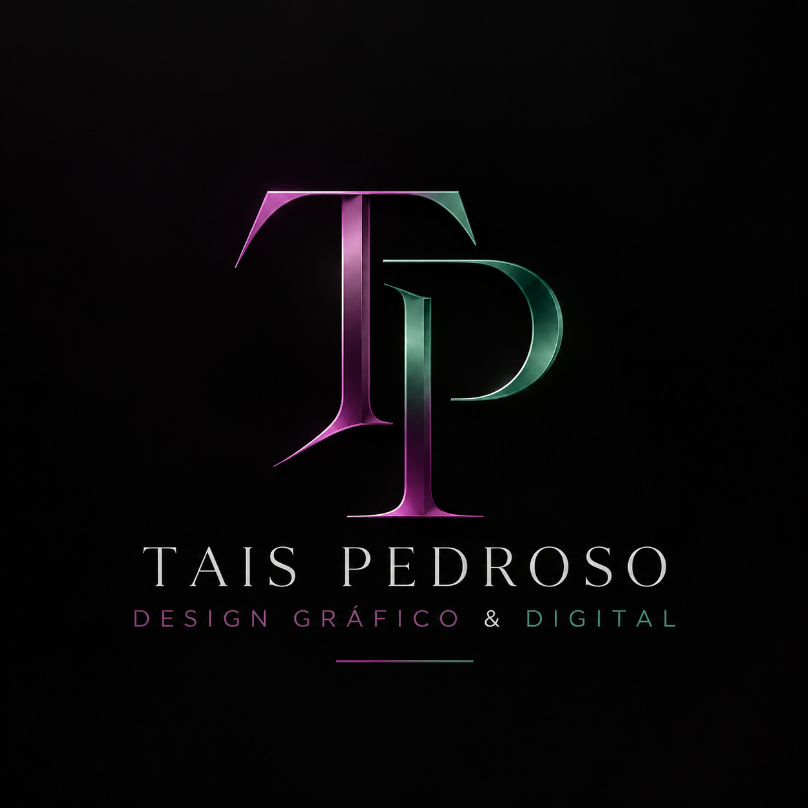

Serviços
Identidade visual, sites, redes sociais, Google e materiais digitais.
Ver serviços →Identidade visual, sites e soluções digitais para transformar boas ideias em uma presença profissional, coerente e memorável.

Entre direto na página que você procura, sem precisar percorrer um site inteiro.
Identidade visual, sites, redes sociais, Google e materiais digitais.
Ver serviços →Combinações para presença digital, identidade e construção completa de marca.
Ver pacotes →Projetos de web design, branding e comunicação digital.
Ver portfólio →Conheça a proposta e a essência do lado criativo da Tais Pedroso.
Conhecer →Conte sua ideia e solicite um orçamento personalizado para o projeto.
Falar comigo →Precisa do lado administrativo? Acesse a TP Assessoria sem sair do ecossistema.
Ir para Assessoria →